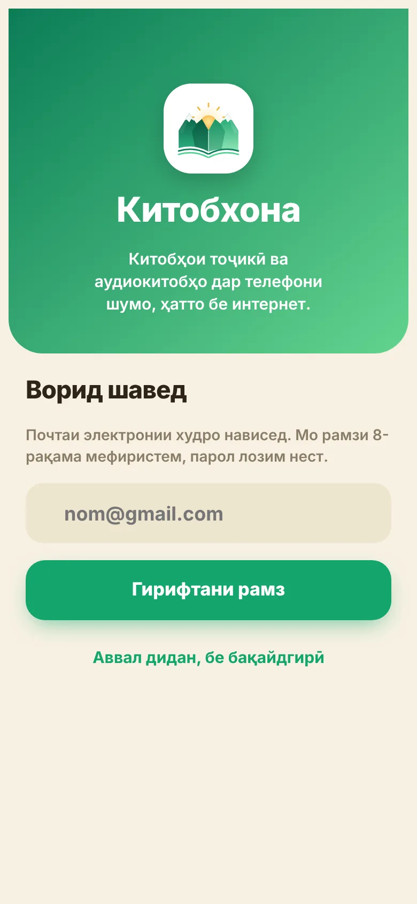
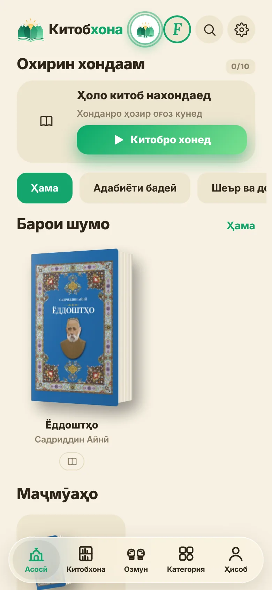
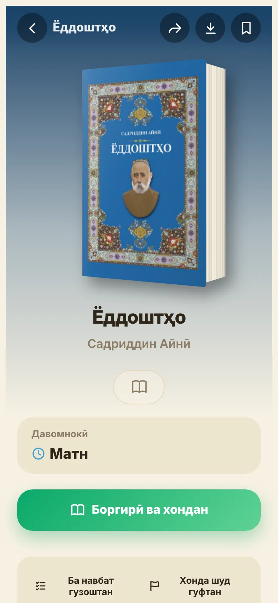
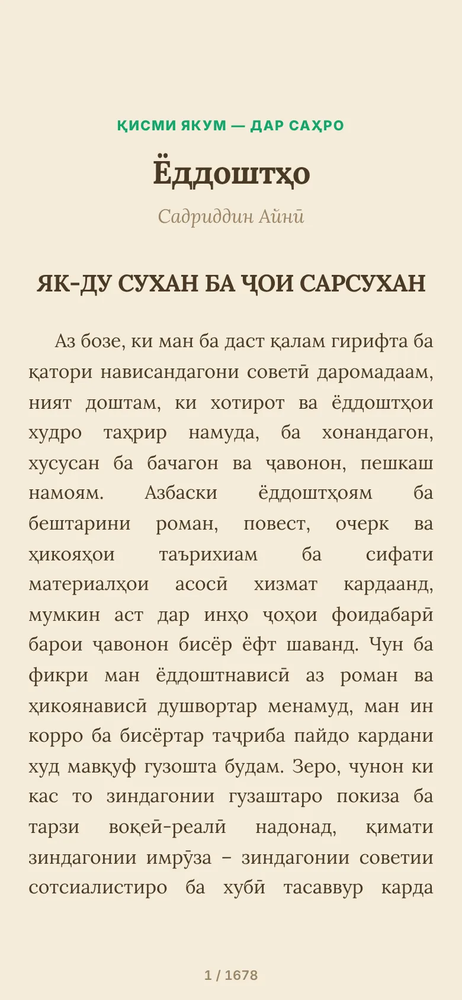
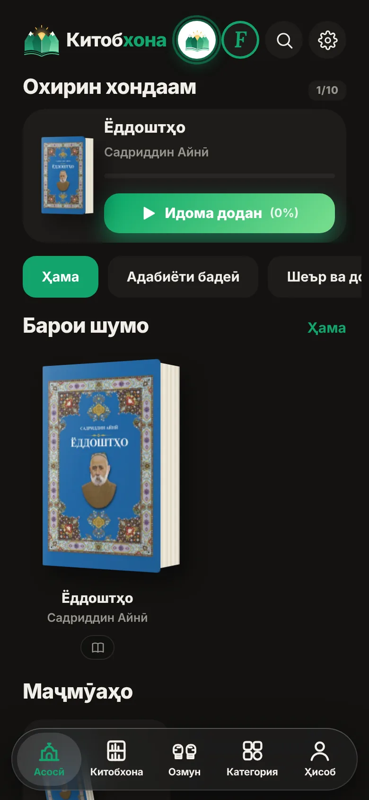

Китобхона
Китобҳои тоҷикӣ дар телефони шумо, ҳатто бе интернет.
Ин нусхаи санҷишӣ аст: барнома ҳанӯз дар Play Market нест ва китобхона ҳоло пурра карда мешавад.
Ҳоло чӣ ҳаст
Ба зудӣ
Тасвирҳо





Дар тасвирҳо китоби «Ёддоштҳо»-и Садриддин Айнӣ, ки дар худи барнома ҳаст.
iPhone: дар экрани асосӣ
Барои iPhone ҳоло барномаи алоҳида нест. Сайтро мисли барнома насб кунед:
- Сайтро танҳо дар Safari кушоед (на дар Telegram ё Instagram).
- Тугмаи «Мубодила» дар поёни экранро пахш кунед.
- Поён кашед ва «Ба экрани асосӣ» (Add to Home Screen)-ро интихоб кунед.
- «Илова»-ро пахш кунед. Нишони Китобхона дар экрани асосӣ пайдо мешавад.
Аз нишони экрани асосӣ кушоед: барнома бе сатри браузер кор мекунад, ва саҳифаи асосӣ бе интернет ҳам кушода мешавад. Китобҳоро як маротиба бо интернет боргирӣ кунед.
Android: насб аз файл
- Саҳифаи боргириро кушоед ва тугмаи сабзро пахш кунед.
- Файли боргирифтаро кушоед (аз «Боргириҳо» ё аз огоҳинома).
- Агар Android «Насби барномаҳои номаълум»-ро пурсад, «Иҷозат додан»-ро пахш кунед (танҳо барои браузери шумо).
- Агар «Play Protect» огоҳӣ диҳад, «Ба ҳар ҳол насб кардан»-ро интихоб кунед. Ин муқаррарӣ аст: барнома ҳанӯз дар Play Market нест.
- Кушоед ва бо почтаатон дохил шавед.
Махфият
Мо почта, ном, синну сол ва омори хонданро нигоҳ медорем. Маълумотро намефурӯшем. Ҳисобро худатон дар барнома нест карда метавонед (Танзимот → Ҳисобро нест кардан). Сиёсати махфият (матни коралама)-ро хонед.
Алоқа
Навигариҳо ва барномаро дар Телеграм-канали мо пайгирӣ кунед.